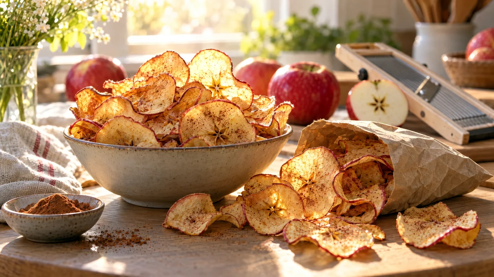

RESTFEST · RECEPTMellanmål
Krispiga äppelchips med kanel
De lite mjuka äpplena i fruktskålen skivas papperstunt och torkas långsamt i ugnen till krispiga chips med ett litet stjärnmönster i mitten. Ett pudrigt lager kanel gör att de doftar äppelpaj. Lika knapriga som chips, men gjorda av bara frukt.
- Förberedelse
- 15 min
- Tillagning
- 1½–2 tim
- Portioner
- 2 plåtar (ca 4 portioner)
- Nivå
- Nybörjare
 Det här behöver du
Det här behöver du
Tryck på + vid det du behöver köpa.
Gör så här
- Sätt ugnen på 100 grader. Klä två plåtar med bakplåtspapper.
- Skölj äpplena och skiva dem papperstunt, 1–2 mm, tvärs över kärnhuset med en mandolin eller en vass kniv. Använd mandolinens handskydd. Peta bort kärnorna, men låt stjärnan i mitten vara kvar.
- Lägg skivorna i ett enda lager på plåtarna, utan att de överlappar.
- Blanda kanel och socker och pudra det tunt över skivorna genom en tesil.
- Torka i ugnen i 1½–2 timmar. Ställ en träslev i ugnsluckan så att den står på glänt och fukten kan komma ut. Vänd skivorna efter en timme.
- Chipsen är klara när kanterna har börjat rulla sig och skivorna känns torra. De blir krispiga först när de svalnar, så låt dem svalna på ett galler.
Dekoration och servering
- Servera chipsen i en skål eller en papperspåse, gärna med några skivor stående på kant så att stjärnmönstret syns.
- Gott med en klick vaniljyoghurt att doppa i, eller smulat över gröt.
- Lägg en näve i matlådan eller i fickan på promenaden.
- Förvara chipsen i en lufttät burk. De håller sig krispiga i ca en vecka. Mjuknar de, torka dem 10 minuter till i ugnen.
Mått och ugnstemperaturer
Måtten är svenska (dl, msk, tsk, krm). Ugnstemperaturerna gäller vanlig ugn med över- och undervärme; med varmluft, sänk med 20 grader.